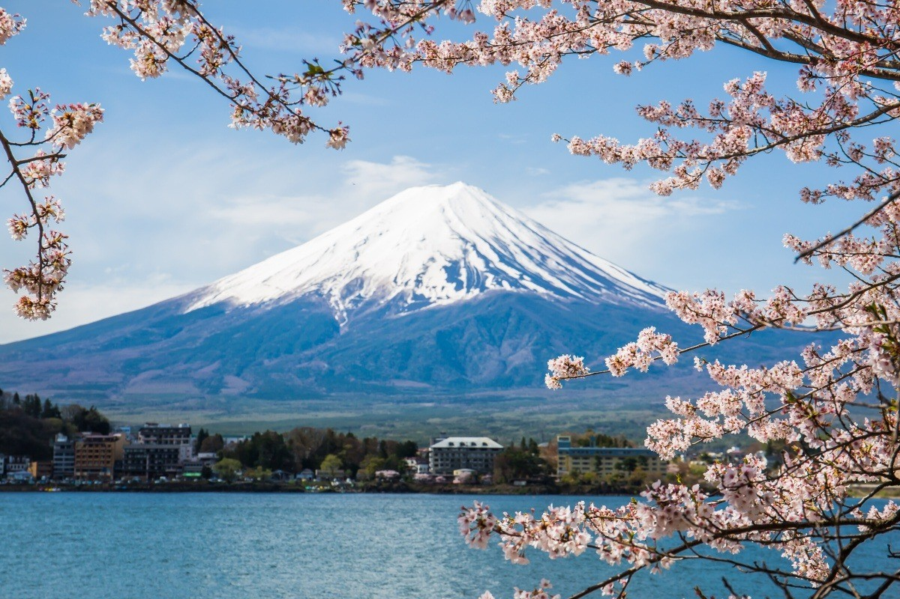
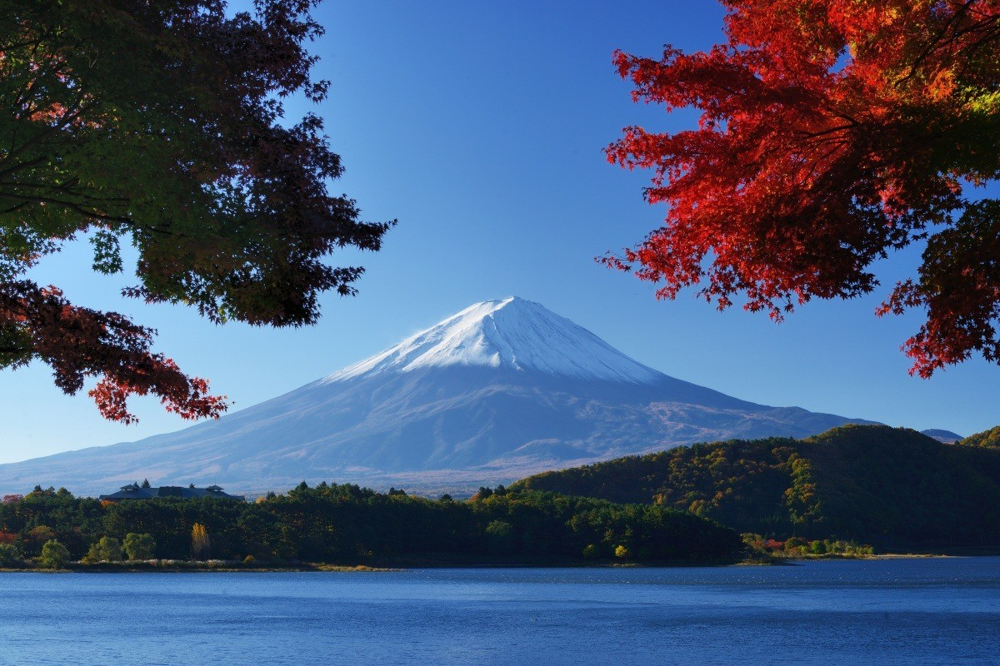

Nikmati Perjalanan Yang tak Terlupakan!

Selamat datang di panduan komprehensif kami untuk merencanakan perjalanan sehari yang tak terlupakan ke Gunung Fuji. Baik Anda seorang pelancong berpengalaman atau baru pertama kali menjelajahi Jepang, Gunung Fuji menawarkan pengalaman yang luar biasa untuk semua orang. Mulai dari pemandangan dan situs budaya yang menakjubkan hingga hidangan lokal yang lezat dan kegiatan petualangan, panduan ini memiliki semua yang Anda butuhkan untuk merencanakan hari yang sempurna di landmark paling ikonik di Jepang.
Gunung Fuji, atau yang dikenal dengan nama Fujisan di Jepang, memiliki ketinggian 3.776 meter (12.389 kaki). Gunung ini merupakan gunung tertinggi di Jepang dan terkenal dengan kerucutnya yang simetris sempurna, menjadikannya salah satu gunung yang paling dikenal dan difoto di dunia. Namun, Gunung Fuji memiliki banyak hal selain keindahannya yang indah. Apakah Anda tertarik untuk mendaki ke puncak, menjelajahi wilayah Lima Danau Fuji yang tenang, atau mengunjungi situs-situs budaya bersejarah, perjalanan sehari ke Gunung Fuji memberikan pengalaman unik dan memperkaya yang tidak ingin Anda lewatkan.
Bagaimana menuju ke sana?
Menuju ke Gunung Fuji dari Tokyo cukup mudah, berkat sistem transportasi Jepang yang efisien. Berikut ini sebagian opsi yang paling populer:
- Shinkansen (Tren Cepat): Perjalanan dari Tokyo ke Kawaguchi Station memakan waktu sekitar 1 jam.
- Bus: Ada beberapa bus ekspres yang menghubungkan Tokyo dengan area sekitar Gunung Fuji.
Rencana Perjalanan Rinci untuk Perjalanan Sehari di Gunung Fuji
Pagi: Berangkat dari Tokyo

Mulailah hari Anda lebih awal untuk memaksimalkan kunjungan Anda ke Gunung Fuji. Tiba di Stasiun Kawaguchiko, salah satu titik akses terbaik menuju Gunung Fuji. Dari sini, Anda dapat menjelajahi area Danau Kawaguchiko yang indah.
- Kunjungi Kawaguchiko Natural Living Center: Pusat perbelanjaan ini menawarkan pemandangan Gunung Fuji dan Danau Kawaguchiko yang menakjubkan. Tempat ini juga merupakan tempat yang tepat untuk mencicipi dan membeli produk lokal seperti selai blueberry dan anggur.
- Jelajahi Taman Oishi: Hanya dengan berjalan kaki singkat dari Kawaguchiko Natural Living Center, Taman Oishi menyediakan latar belakang yang menakjubkan untuk foto-foto dengan bunga-bunga musiman dan gunung yang ikonik.
Tengah hari: Tempat Budaya dan Pemandangan Indah

Setelah menjelajahi Danau Kawaguchiko, naiklah bus singkat untuk menjelajahi beberapa tempat wisata budaya dan pemandangan di sekitar Gunung Fuji.
- Pagoda Chureito: Terletak di Taman Arakurayama Sengen, pagoda ini menawarkan salah satu pemandangan Gunung Fuji yang paling ikonik. Naiki 400 anak tangga menuju pagoda untuk menikmati pemandangan gunung yang menakjubkan dengan latar belakang bunga sakura di musim semi.
- Oshino Hakkai: Satu set delapan kolam yang dibentuk oleh salju yang mencair di Gunung Fuji. Perairan yang jernih, mata air yang mengalir dan pemandangan desa tradisional menjadikannya tempat yang sempurna untuk fotografi dan berjalan-jalan santai.
Sore: Petualangan dan Relaksasi

Seiring berjalannya hari, Anda dapat memilih antara aktivitas yang penuh aksi atau cara yang lebih santai untuk menikmati Gunung Fuji.
- Jalur Pendakian: Bagi para penggemar petualangan, mendaki salah satu jalur menawarkan perjumpaan yang lebih dekat dengan keindahan alam Gunung Fuji. Kawasan Lima Danau Fuji menawarkan beberapa jalur untuk berbagai tingkat keahlian.
- Pelayaran Danau Ashi: Jika Anda lebih suka sore hari yang lebih santai, pertimbangkan untuk berlayar di Danau Ashi di dekat Hakone. Perjalanan dengan perahu yang tenang ini memberikan pemandangan spektakuler Gunung Fuji dari sudut pandang yang berbeda.
Selamat malam: Pemandangan Matahari Terbenam dan Bersantap

Akhiri perjalanan Anda dengan pengalaman malam yang tak terlupakan.
- Dataran Tinggi Fuji Q: Bagi para pencari sensasi, akhiri hari Anda dengan bersenang-senang di Fuji Q Highland, sebuah taman hiburan dengan roller coaster dan wahana yang menawarkan pemandangan Gunung Fuji.
- Masakan Lokal: Cicipi hidangan lokal seperti mi Hoto, hidangan hangat yang sempurna untuk menghangatkan badan selama bulan-bulan yang lebih dingin. Kota Kawaguchiko dan Fujiyoshida adalah rumah bagi banyak restoran yang menawarkan makanan lezat dengan pemandangan.